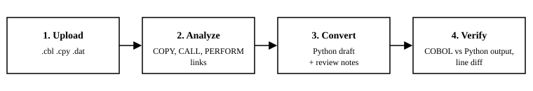
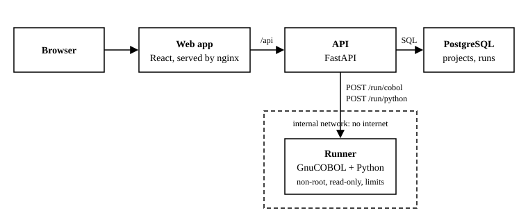

LegacyLift
AI Pipeline for Legacy Code Modernization
CS 410 / CS 411W team project, Old Dominion University
Elevator Pitch
LegacyLift is an AI-powered tool that helps organizations modernize outdated code like COBOL by analyzing and converting it into secure, maintainable systems—without losing existing functionality.
Problem Description
Many critical enterprise systems still run on legacy software written in outdated languages such as COBOL. These systems are deeply embedded in industries such as finance, government, and enterprise infrastructure. 95% of ATM transactions in the U.S. are processed using COBOL-based systems, and over 60% of U.S. hospitals run critical applications on legacy software such as COBOL and Fortran (Gruca, 2025).
Customers
Organizations such as financial institutions, government agencies, and large enterprises that rely on legacy systems for critical operations. These organizations are seeking a reliable way to modernize their systems while maintaining functionality and reducing risk.
- Financial Institutions
- Government Agencies
- Large Enterprises
End Users
Technical professionals within these organizations, including software engineers, system architects, and DevOps engineers. They will use the system to analyze legacy code, understand dependencies, and assist in converting systems to modern technologies.
- Software Engineers
- System Architects
- DevOps Engineers
Solution Statement
LegacyLift proposes an AI-driven pipeline that analyzes dependencies and incrementally converts legacy systems to modern infrastructure. It will maintain full compatibility with the infrastructure of the legacy code while enabling the security and performance benefits of modern programming languages.
How It Works
A user uploads a COBOL project, LegacyLift maps how its files depend on each other, converts each program to Python, and then runs the original COBOL and the Python side by side to check that they print the same output.


docker compose up. Uploaded code runs only in the runner, which has no internet access.Features at Demo 2
| Feature | Status |
|---|---|
| Upload COBOL programs, copybooks, and data files as a project | Working; saved in PostgreSQL |
Dependency analysis (COPY, CALL, PERFORM) | Working |
| COBOL to Python conversion | Working for a subset; other lines become review notes |
| Verification: run COBOL (GnuCOBOL) and Python, compare output | Working in the runner container |
| User accounts | In progress |
| AI-assisted translation (Gemini with RAG) | Planned for Demo 3 |
References
Gruca, A. (2025, July 24). 2025 legacy code stats: Costs, risks & modernization. Pragmatic Coders. https://www.pragmaticcoders.com/resources/legacy-code-stats